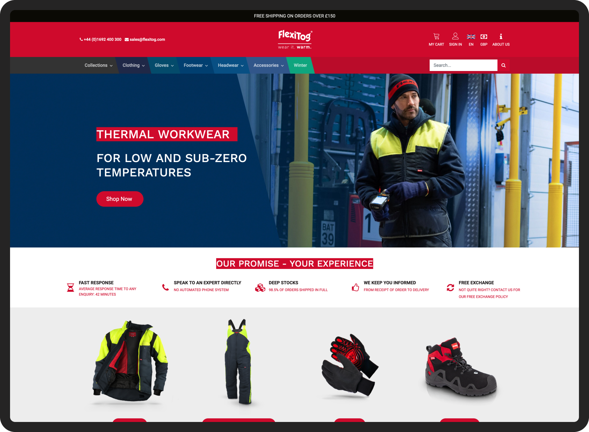

User story
FlexiTog, a leading European supplier of cold temperature protective workwear, approached us to improve their website's user experience and conversion rate. Their internal research indicated navigation issues, and they planned a website redesign with a new navigation system. However, they sought confirmation from a UX expert before committing significant resources.

The challenge
FlexiTog believed unclear navigation was hindering user experience and conversion rates. They planned a website redesign with a new navigation system but wanted confirmation from a UX expert before committing to this potentially resource-intensive solution.
The solution: re-evaluating the problem
Our initial step was to analyze website data to assess the navigation's effectiveness. Surprisingly, the data showed no significant friction caused by the navigation itself. To pinpoint the real issues, we delved deeper into user feedback and the insights from the FlexiTog sales team. An interesting pattern emerged: while users weren't necessarily lost, the overwhelming number of product options seemed to slow them down. The vast selection made it difficult for them to find what they needed quickly, leading some to get sidetracked or abandon the purchase process altogether.
While encouraging users to explore the website was important, we realized that prioritizing a smooth path to the initial purchase was key. We decided to take a user-centered approach, focusing on optimizations that could be implemented in-house before recommending a new navigation system, which would require significant developer input.
Our first step was to reduce the height of the hero sections on the FlexiTog website. This subtle change aimed to gently nudge users to scroll down the page and discover the key product categories we strategically placed higher up. We also revamped the product filters to make them more intuitive and helpful. Finally, we introduced sections for "Similar Products" and "Purchase Partner Items" to present relevant suggestions and streamline the user journey towards a purchase.
The outcome
The implemented changes were highly successful. Conversion rates rose significantly, indicating a much smoother buying experience. We also saw a decrease in u-turns, suggesting that users were finding what they needed more easily. User engagement with the website increased, and the average number of clicks required to reach the shopping cart went down.